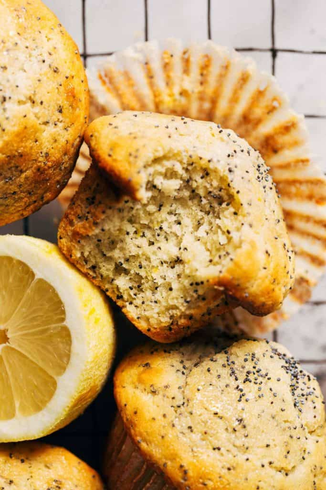

Lemon Poppy Seed Muffins

Description
Delicious, zesty, moist Lemon Poppy Seed muffins made just the way you remember Mom making them
Ingredients
- 1 (15.25 ounce) package yellow cake mix
- 4 large eggs
- 1 cup hot water
- ½ cup vegetable oil
- 1 (3 ounce) package instant lemon pudding mix
- ¼ cup poppy seeds
Steps
- Preheat the oven to 350 degrees F (175 degrees C). Line muffin cups with paper liners.
- Beat cake mix, eggs, hot water, vegetable oil, pudding mix, and poppy seeds together in a large bowl with an electric mixer on low until blended, about 4 minutes. Pour into lined muffin cups to about 1/3 full.
- Bake in the preheated oven until golden and the tops spring back when lightly pressed, about 20 minutes.